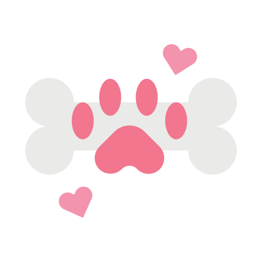
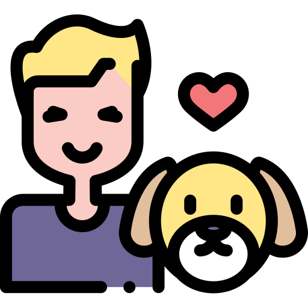

<div style="margin: 0 auto;">
    
    <h1 class=" text-center fadeinleft animation-duration-1000">Bienvenidos a <br>
        
    </h1>
    
    
    <div class="flex justify-content-center flex-wrap fadeinleft animation-duration-1000" 
        style="position: relative;">
    
        <div class="opacity-50 m-8 lg:m-1 md:m-1 contenedor-hueso">
            
        </div>
    
        <div class="font-bold text-gray-900 border-round m-2" style="height: 50vh; width: 50vh; z-index: 20;">
            <p class="flex align-items-center justify-content-center">
                     
            </p>
            
            <div class="flex align-items-center justify-content-center">
                <button pButton pRipple type="button" label="Soy un usuario" 
                class="p-button-outlined p-button-text p-button-raised p-button-secondary purple"
                (click)="usuario()"></button>
            </div>
            <!-- TODO: Ruta y componente pendientes -->
            <br>
            <a routerLink="/scanner/recuperar" class="flex align-items-center justify-content-center">Perdí mi QR</a>
            <br>
            <a routerLink="/mascota-perdida" class="flex align-items-center justify-content-center">Perdí mi mascota</a>
        </div>
    
        <div class="font-bold text-gray-900 border-round m-2" style="height: 50vh; width: 50vh; z-index: 20;">
            <p class="flex align-items-center justify-content-center">
                     
            </p>
            <div class="flex align-items-center justify-content-center">
                <button pButton pRipple type="button" label="Soy un veterinario" 
                class="p-button-outlined p-button-text p-button-raised p-button-secondary purple"
                (click)="veterinarioLogin()"></button>
            </div>
            <!-- TODO: Ruta y componente pendientes -->
            <br>
            <a routerLink="/registro" class="flex align-items-center justify-content-center">Registrarse</a>
        </div>
        
    </div>
    
    
    <div class="flex justify-content-center flex-wrap font-bold fadeinleft animation-duration-1000">
        <!-- TODO: Definir ruta y componente -->
        <a routerLink="/scanner" class="flex align-items-center justify-content-center" style="z-index: 20;">Encontre una mascota</a>
    </div>
    
</div>

<div class="flex justify-content-center flex-wrap mt-7 fadeinleft animation-duration-1000">
    <br>
    <small style="font-size: 9px; z-index: 20;">
        <a href="https://www.flaticon.es/iconos-gratis/perro" title="perro iconos">Iconos creados por Freepik - Flaticon</a>
    </small>
    <br>

    <small style="font-size: 9px; z-index: 20;" class="ml-4">
        <a href="https://www.flaticon.es/iconos-gratis/veterinario" title="veterinario iconos">Veterinario iconos creados por amonrat rungreangfangsai - Flaticon</a>
    </small>
    <br>

    <small style="font-size: 9px; z-index: 20;" class="ml-4">
        <a href="https://www.flaticon.es/iconos-gratis/cuidado-de-mascotas" title="cuidado de mascotas iconos">Cuidado de mascotas iconos creados por Good Ware - Flaticon</a>
    </small>
</div>


